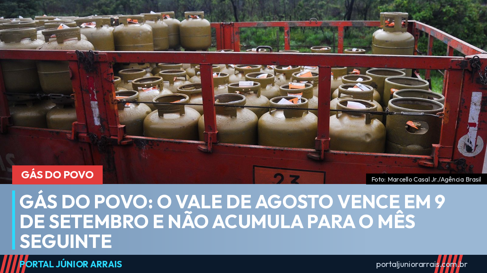

Gás do Povo: o vale de agosto vence em 9 de setembro e não acumula para o mês seguinte

O vale do Programa Gás do Povo liberado nesta segunda-feira, 10 de agosto, tem prazo para ser usado: 9 de setembro. Passou dessa data, a recarga é perdida — e ela não se acumula para o mês seguinte.
Esse é o ponto que costuma passar despercebido. Como o benefício não cai em dinheiro na conta, e sim como um direito de retirar o botijão na revenda credenciada, muita família deixa para depois e descobre tarde demais que o prazo fechou.
Quem foi contemplado neste mês
Em agosto entram as famílias de duas ou três pessoas que ingressaram no programa em janeiro ou maio, e as famílias de quatro pessoas ou mais que entraram em janeiro, março, abril ou junho. A frequência das recargas varia conforme o tamanho da família: casas maiores recebem mais vezes ao longo do ano.
O que o vale cobre e o que não cobre
O programa paga integralmente a recarga do botijão de 13 quilos, com o ressarcimento à revenda feito pela Caixa Econômica Federal. O valor tem como base um preço de referência, calculado e ajustado periodicamente conforme a variação regional.
O que não está incluído: o vasilhame, quando a família não tem o botijão vazio para trocar, e a taxa de entrega, se a revenda cobrar frete. São as duas cobranças legítimas que podem aparecer — e também as duas que mais geram confusão sobre estar sendo cobrado indevidamente.
Como identificar a revenda credenciada
As revendas autorizadas exibem a identidade visual do programa na fachada, nos botijões e nos veículos de entrega. A lista completa dos estabelecimentos participantes de cada cidade fica disponível no aplicativo oficial do programa.
Quem tem direito ao programa
O Gás do Povo atende famílias inscritas no Cadastro Único com renda de até meio salário mínimo por pessoa, com prioridade para quem recebe Bolsa Família. O cadastro precisa estar atualizado — dado desatualizado é um dos motivos mais comuns de a família deixar de ser contemplada sem entender o porquê.
Cuidado com golpe
O modelo do programa criou uma brecha explorada por golpistas: mensagens dizendo que o vale precisa ser "resgatado" em um link antes de vencer, ou que é preciso pagar uma taxa de liberação para não perder a recarga do mês. Não existe resgate por link, não existe taxa e nenhum órgão do governo pede Pix, senha ou foto de documento para liberar o botijão.
Se o vale não apareceu, se a revenda recusou a retirada ou se houve cobrança que você não entendeu, vale procurar um profissional de sua confiança para verificar a situação do cadastro antes que o prazo do mês termine.
Conteúdo informativo — não substitui orientação individualizada sobre o seu caso.
Foto: Marcello Casal Jr./Agência Brasil